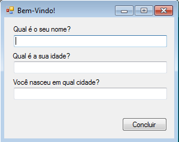
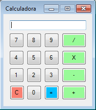
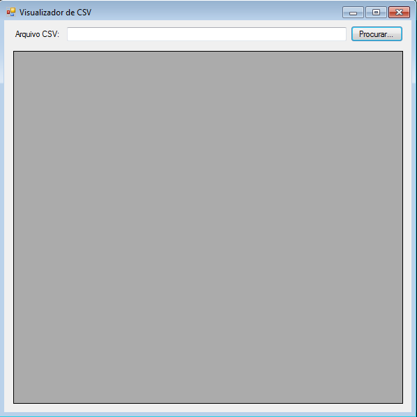
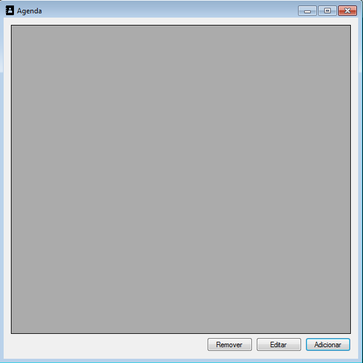
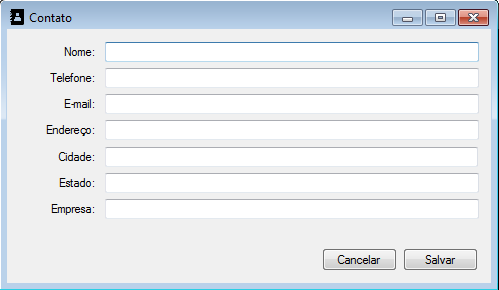

1) Implemente um programa com uma janela parecida com a imagem abaixo:
O usuário poderá redimensionar, maximizar e restaurar a janela, e os componentes da janela devem se ajustar corretamente. Ao clicar no botão Concluir, o programa deve exibir um MessageBox com as informações preenchidas pelo usuário.
2) Implemente uma calculadora, conforme a imagem abaixo. Faça com que o usuário não possa redimensionar a janela.
3) Implemente um visualizador de CSV, conforme imagem abaixo. O programa deve oferecer um OpenFileDialog para o usuário procurar o arquivo CSV, e em seguida exibir o conteúdo do arquivo CSV em um DataGridView.
4) Implemente uma agenda de contatos. Para isso, você precisará de duas janelas, conforme imagens abaixo. Armazene os contatos em arquivo CSV ou DAT. Utilize o ícone agenda.ico para as duas janelas.
 5) Altere os exercícios 2.1.6 e 2.1.7 (cadastro de músicas e filmes, pode ser visto aqui), para ser feito com interface gráfica, da forma que desejar. Pode ter duas janelas (uma para música e outra para filmes) ou um grid de músicas e outro de filmes na mesma janela.
6) Altere os exercícios 2.1.8 e 2.1.9 (contas correntes de agência bancária, pode ser visto aqui), para ser feito com interface gráfica, da forma que desejar.
7) Altere o exercício 2.1.10 (folha de pagamento, pode ser visto aqui), para ser feito com interface gráfica, da forma que desejar.
8) Altere o exercício 2.1.11 (campeonato de futebol, pode ser visto aqui), para ser feito com interface gráfica, da forma que desejar.
9) Altere o exercício 2.4.2 (controle de estoque, pode ser visto aqui), para ser feito com interface gráfica, da forma que desejar.
10) Altere o exercício 2.4.3 (gestão de biblioteca, pode ser visto aqui), para ser feito com interface gráfica, da forma que desejar.